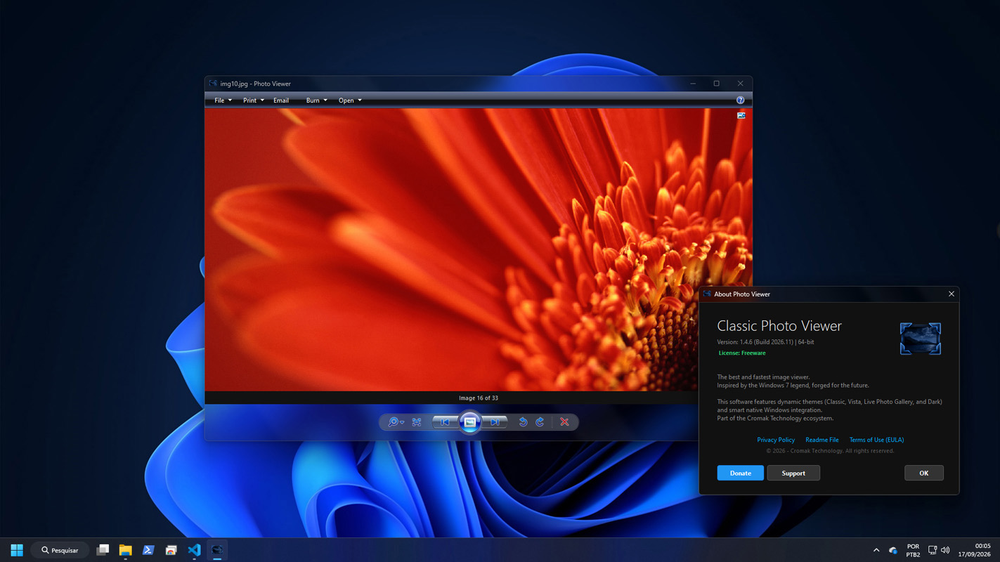
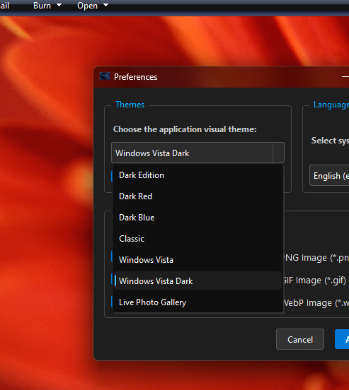
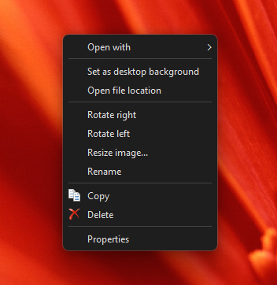
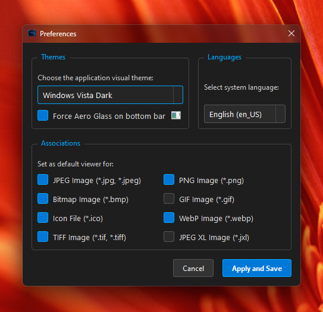
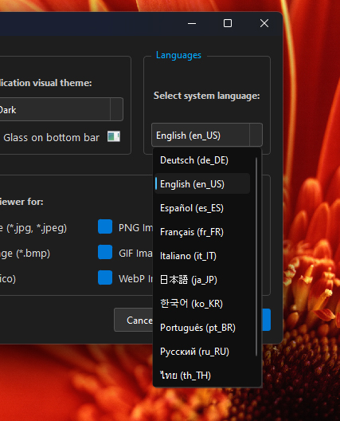
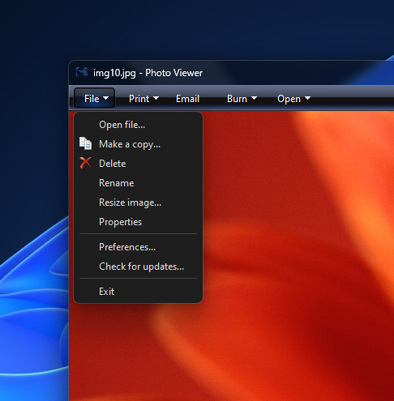

Visualizador de Fotos para Windows
A Experiência Clássica do Windows em um Motor Moderno 10x mais rápido
Diga adeus à lentidão do App Fotos do Windows 11 e às limitações do antigo visualizador do Windows 7. Abra imagens instantaneamente em 0,18s com transparência Aero Glass, painel lateral retrátil Windows Live, suporte nativo a JPEG XL (.jxl), WebP e GIFs animados, além de ferramentas profissionais de redimensionamento e renomeação em lote.
Versão: 1.4.6 (Build: 2026.11) • Arquitetura 64-bits Nativa

A Beleza do Passado, a Engenharia do Futuro
Reviva a interface rápida e direta que marcou época, agora turbinada com ferramentas de produtividade que o visualizador original nunca teve.
6 Temas Clássicos & Aero Glass
Alterne instantaneamente entre os temas Classic, Windows Vista, Live Photo Gallery e 3 variações de Dark Mode, com suporte real à transparência translúcida Aero Glass no Windows 10 e 11.
Motor 10x Mais Rápido
Arquitetura otimizada em PyQt6 com cache inteligente, pré-carregamento em background e leitura EXIF automática. Abre fotos Full HD em 180ms e alterna entre imagens em apenas 20ms.
Painel Lateral Windows Live
Inspirado no botão retrátil clássico do Windows Media Player e Live Photo Gallery: exiba ou oculte uma faixa vertical translúcida com todas as miniaturas da pasta sem cobrir sua foto.
Novo: Motor JPEG XL (.JXL) Nativo
Pronto para a nova geração da fotografia digital: decodifique imagens JPEG XL (.jxl) estáticas e animadas (HDR/Lossless) sem precisar instalar codecs pagos da Microsoft Store, além de WebP, GIFs animados e camadas .ICO/.TIFF.
Lote (F2) & Redimensionador
Renomeie centenas de fotos em lote com prefixo e numeração automática anti-colisão (F2) ou redimensione imagens por pixels, porcentagem e presets HD/4K (Ctrl+R) sem abrir editores pesados.
Privacidade & USB Inteligente
Operação 100% privada sem telemetria. Conta ainda com detecção de Pendrives USB em tempo real no menu Enviar para e compartilhamento inteligente por e-mail compatível com Webmail e Outlook.
Suporte Nativo a JPEG XL (.JXL) — Sem Extensões da Microsoft Store
O JPEG XL (.jxl) é o sucessor oficial do JPEG: entrega até 60% mais compressão com fidelidade visual superior, transparência Alpha, suporte HDR e animações. Enquanto o visualizador antigo do Windows 7 recusa o formato e o Windows 11 exige a instalação de extensões extras da Microsoft Store, o Cromak Photo Viewer v1.4.6 traz um decodificador .jxl multi-thread compilado diretamente dentro do motor:
.jxl direto da caixa
.jxl sem perda
Comparativo Direto com o Original
Veja por que o Cromak Photo Viewer v1.4.6 é a evolução definitiva tanto sobre o antigo visualizador do Windows 7 quanto sobre o pesado aplicativo Fotos do Windows 11.
| Recursos & Performance | Visualizador Clássico (Win 7) | App Fotos (Windows 11) | Cromak Photo Viewer v1.4.6 |
|---|---|---|---|
| Velocidade de Abertura e Troca | Rápido (Legado COM/GDI+) | Lento (2s a 5s + Processos UWP) | Instantâneo (~0,18s / 20ms por foto) |
| Formatos Modernos (.JXL, .WEBP, .GIF) | Não abre JXL/WebP e congela GIFs | Exige extensões da Microsoft Store | 100% Nativo (JXL, WebP, GIF, ICO, TIFF) |
| Temas Clássicos, Dark Mode & Aero Glass | Apenas fundo branco (Sem Dark Mode) | Sem visual clássico / Sem Aero Glass | 6 Temas (Classic, Vista, Live, Dark + Aero) |
| Painel Lateral de Miniaturas (Filmstrip) | Não possui | Barra inferior que cobre a imagem | Sidebar Vertical Windows Live Translúcida |
| Renomeação em Lote (F2) & Redimensionador | Não possui | Não possui renomeação em lote | Nativo (F2 Lote + Ctrl+R Presets HD/4K) |
| Envio Direto para Pendrive USB & Webmail | Erro MAPI se não tiver Outlook configurado | Exige conta Microsoft / OneDrive | Detecção USB Automática + Fallback Webmail |
| Telemetria e Privacidade | Offline (Desativado por padrão no Win 11) | Telemetria intensa e anúncios do OneDrive | Zero Telemetria (100% Privado e Gratuito) |
Visão Geral do Layout
Clique nas imagens para expandir e conferir a fidelidade visual de cada detalhe.
Navegação Clássica
Controles de reprodução, apresentação de slides (F11), rotação, zoom e exclusão exatamente onde você se lembra.

Sidebar Vertical Windows Live (Novo)
Painel lateral retrátil com transparência Aero Glass que lista todas as imagens da pasta em tempo real sem atrapalhar a visualização principal.

6 Temas Personalizáveis
Escolha entre Windows Classic, Vista, Live Photo Gallery e três variações de Modo Escuro, mantendo toda a elegância original.

Menu de Contexto Rápido
Acesse opções úteis como copiar, redimensionar, renomear em lote, girar ou definir como papel de parede direto pelo botão direito.

Integração Inteligente
Associe formatos clássicos e modernos (JPG, PNG, WEBP, JXL, GIF, BMP, ICO, TIFF) para abrirem nativamente com apenas um clique.

11 Idiomas em Tempo Real
Tradução completa e instantânea para 11 idiomas globais. Troque o idioma da interface sem precisar reiniciar o aplicativo.

Barra de Ferramentas Completa
Atalhos rápidos no topo para imprimir com pré-visualização, enviar para Pendrives USB, compartilhar por e-mail ou abrir em editores externos.

Transparência Aero Glass
Traga de volta o autêntico efeito translúcido de vidro no rodapé e na barra lateral para o Windows 10 e Windows 11 via integração DWM nativa.
Engenharia de Alta Performance em PyQt6
-
Decodificação Nativa + JPEG XL & Animados
Carrega instantaneamente JPG, PNG, BMP, WEBP, JPEG XL (
.jxl), GIFs animados e arquivos multipágina (.ico/.tiff) com rotação automática via metadados EXIF e cursor inteligente de arraste sob demanda. -
Produtividade Integrada (Lote, Resize e USB)
Inclui motor de renomeação em lote em 2 fases (zero risco de colisão de nomes), redimensionador de alta precisão com filtro SmoothTransformation e varredura Win32 de unidades USB removíveis em tempo real.
-
Arquitetura Multithread Não-Bloqueante
A varredura de diretórios com milhares de fotos, geração de miniaturas da barra lateral e pré-carregamento de imagens adjacentes rodam em threads dedicadas para que a interface nunca engasgue.
Fair Use e Transparência
Este é um projeto independente feito de fã para fãs. Não possui vínculos com a Microsoft Corporation. As marcas e designs originais pertencem aos seus respectivos proprietários. Nosso objetivo é a preservação histórica, acessibilidade e produtividade.
Compatibilidade & 11 Idiomas Nativos
Compilado de forma 100% autônoma (Stand-Alone). Não requer instalação de Python, codecs ou frameworks externos na sua máquina.
Faça o Download
O Visualizador de Fotos Clássico v1.4.6 é um projeto 100% gratuito. Você pode apoiar o desenvolvimento contínuo se desejar.
Uso Pessoal (Freeware)
- Software Completo v1.4.6
- 6 Temas + Aero Glass + Sidebar Live
- Suporte a JXL, WebP, GIF, ICO e TIFF
- Renomear em Lote & Redimensionar
- Zero Telemetria e Sem Anúncios
Apoiador do Projeto
- O software é idêntico, mas:
- Você incentiva novos updates
- Ajuda a manter o projeto e o site vivos
- Nosso eterno agradecimento
Distribuído com orgulho pela Cromak Technology.